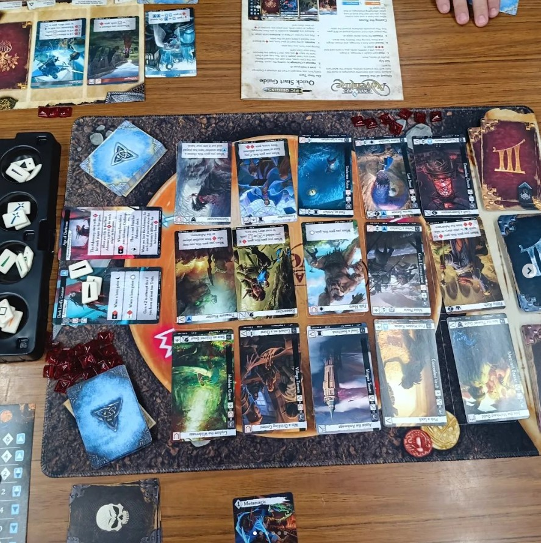

Board Game Demonstration
How to have a successful demonstration

Demo: Call To Adventure
Before the event
To prepare for a game demonstration you need to follow a few simple steps. These can be done in any order just as long as you understand that they all need to be done. To what degree is based on the complexity of the game and the duration of the demonstration.
- Learn the game
- Come up with a demo script
- Print off necessary quick rules
- Print off any necessary extra sheets
- Schedule event with location
- Understand common problems ran into while playing the game by going to Board Game Geek site
- Advertise event and location on social media
- Make an event registration for the event if needed
Day of the event
The day of the event you need to prepare a few minor things. It's best to do these in order.
- Remember the game
- Remember the printouts if you made them
- Show up early
- setup game
- Shout out event on social media
- (Optional)Take photo of setup
- run the demonstrations as people come in
- answer questions
- Make notes of the plays
- Make notes of what players thought
- Make notes of how many players you had per demo
- Take required notes by your demo company (if applicable)
- Take photos (ASK if you take photos of players)
- Post on social media pictures of the event
- Record event on applicable site or email demonstration team
After the event
Congrats on completing the event. Take a deep breath. You did great.
- Submit event on applicable site or email demonstration team or email contact
- relax
Record the demo event and how it went on Board Game Geek site